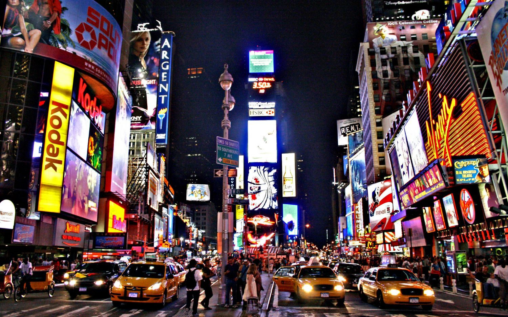
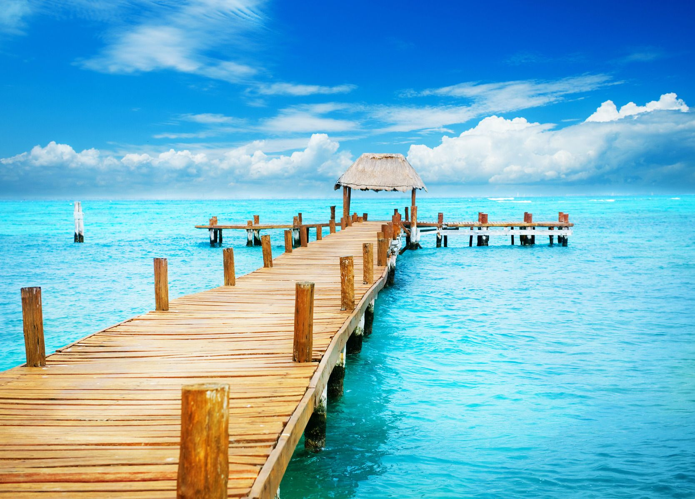
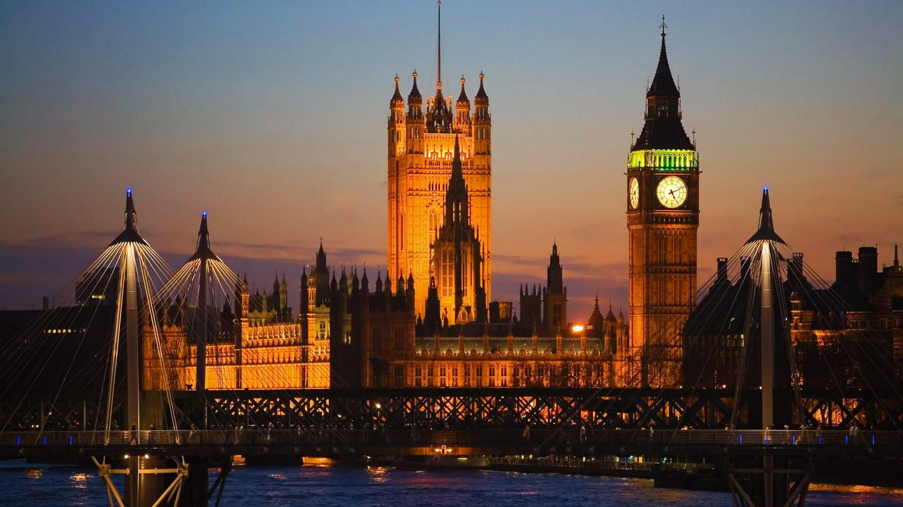

Top 5 best place to travel
1. Paris,France

Like all great cities, you can spend months in Paris and barely scratch the surface of the city’s cultural treasures. It has museums galore, stellar shopping and busy cafés perfect for people-watching.
Fall in love with Paris.
2.New York, United States
New York is true to its roots and remains a city of immigrants with inspiring architecture and a thriving arts scene. Take in a show on Broadway, shop in SoHo, spend a lazy day in Central Park and explore the city’s diverse neighborhoods.
Inexpensive fun: New York on a budget.
3. Rome, Italy

The Eternal City Rome celebrates its long history with monuments, churches and restored ruins that offer a glimpse into life during the days of the great Roman Empire. Celebrate the city’s roots and immerse yourself in the culture over a heaping bowl of pasta and a taste of gelato.
4. Cancun, Mexico
Miles of beaches, endless luxury accommodations and a nonstop party atmosphere in Cancun have transformed this once sleepy village on the Yucatan coast into one of Mexico's most popular tourist attractions, particularly during spring break.
5. London, England
London is a cosmopolitan city with a unique blend of historic traditions and a hip, modern culture. You can enjoy tea and crumpets and celebrate the city’s royal roots before heading out to a slick gastropub for gourmet dinner and drinks